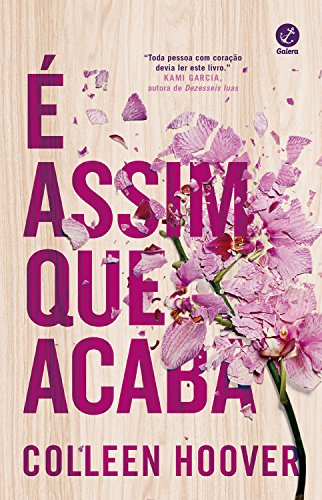

Biblioteca Oásis


Autora: C.C. Hunter
Leah McKenzie está morrendo. Seu coração foi atacado violentamente pela bactéria miocardite e por isso ele precisou ser retirado. O que a mantém viva hoje é um coração artificial que ela precisa carregar em uma mochila o tempo inteiro. A única coisa capaz de salvar a sua vida é um transplante, porém Leah tem um tipo sanguíneo muito raro e, portanto, ela parou de frequentar a escola e de ver seus amigos na espera da morte ou de um milagre. Aos 17 anos ela não faz mais planos para seu futuro, mas mesmo assim, ainda tem uma lista de coisas que quer muito fazer antes de morrer.
Autora: Amanda Lovelace
A bruxa não vai para a fogueira neste livro é dividido em quatro unidades temáticas, O julgamento, A queima, A tempestade de fogo e As cinzas. É uma boa leitura para quem gosta de poesia contemporânea envolvendo a temática de empoderamento, especialmente feminismo. É também um ótimo lembrete de que as bruxas modernas estão mais poderosas do que nunca.
Autora: Colleen Hoover
Lily nem sempre teve uma vida fácil, mas isso nunca a impediu de trabalhar arduamente para conquistar a vida tão sonhada. Ela percorreu um longo caminho desde a infância, em uma cidadezinha no Maine: se formou em marketing, mudou para Boston e abriu a própria loja. Então, quando se sente atraída por um lindo neurocirurgião chamado Ryle Kincaid, tudo parece perfeito demais para ser verdade. Ryle é confiante, teimoso, talvez até um pouco arrogante. Ele também é sensível, brilhante e se sente atraído por Lily. Porém, sua grande aversão a relacionamentos é perturbadora. Além de estar sobrecarregada com as questões sobre seu novo relacionamento, Lily não consegue tirar Atlas Corrigan da cabeça — seu primeiro amor e a ligação com o passado que ela deixou para trás. Ele era seu protetor, alguém com quem tinha grande afinidade. Quando Atlas reaparece de repente, tudo que Lily construiu com Ryle fica em risco. Com um livro ousado e extremamente pessoal, Colleen Hoover conta uma história arrasadora, mas também inovadora, que não tem medo de discutir temas como abuso e violência doméstica. Uma narrativa inesquecível sobre um amor que custa caro demais.